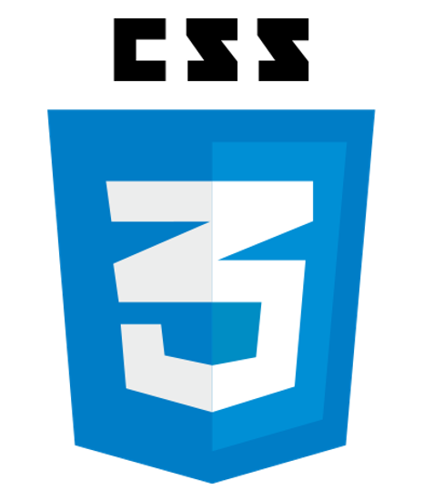
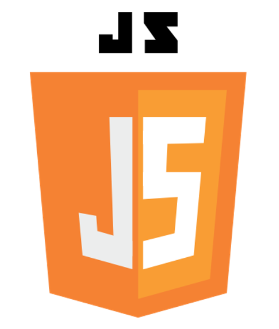

Welcome to the Web Development Track!
Tutorial 1: VS Code

Get started on your web development experience by downloading the required application for your device.
Tutorial 2: VS Code Tips
Learn some helpful tips and tricks for using VS Code, such as theme personalization, opening multiple files, etc.
Tutorial 3: HTML
Learn how to make a basic website. This is an intro to how you can add content to a web page.
Tutorial 4: CSS

Learn how to style your created website by changing colors, fonts, sizes, and other aspects of your site.
Tutorial 5: JavaScript

Learn how you can dynamically update your site and add cool features for a more well-rounded webpage.